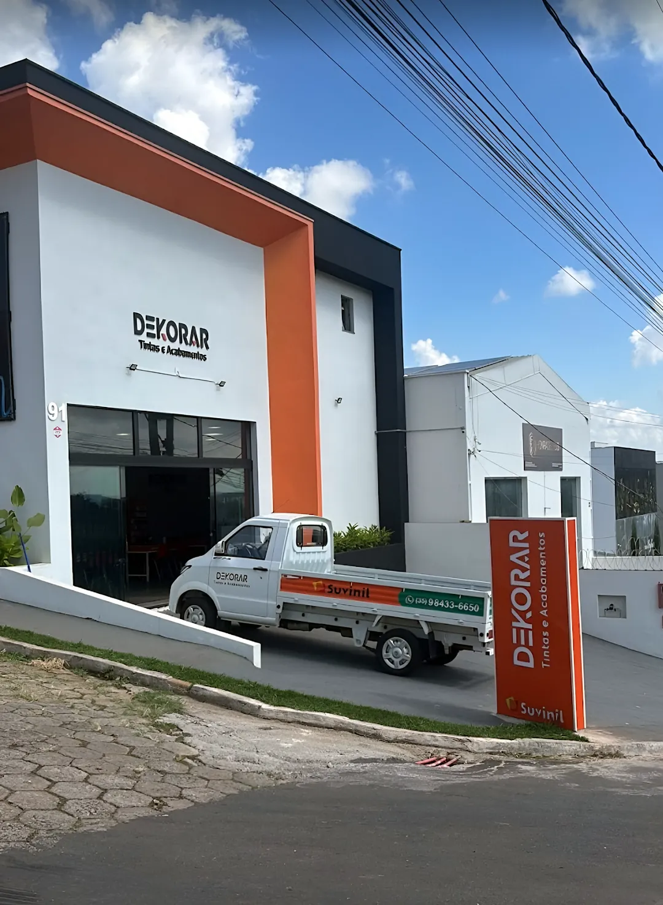
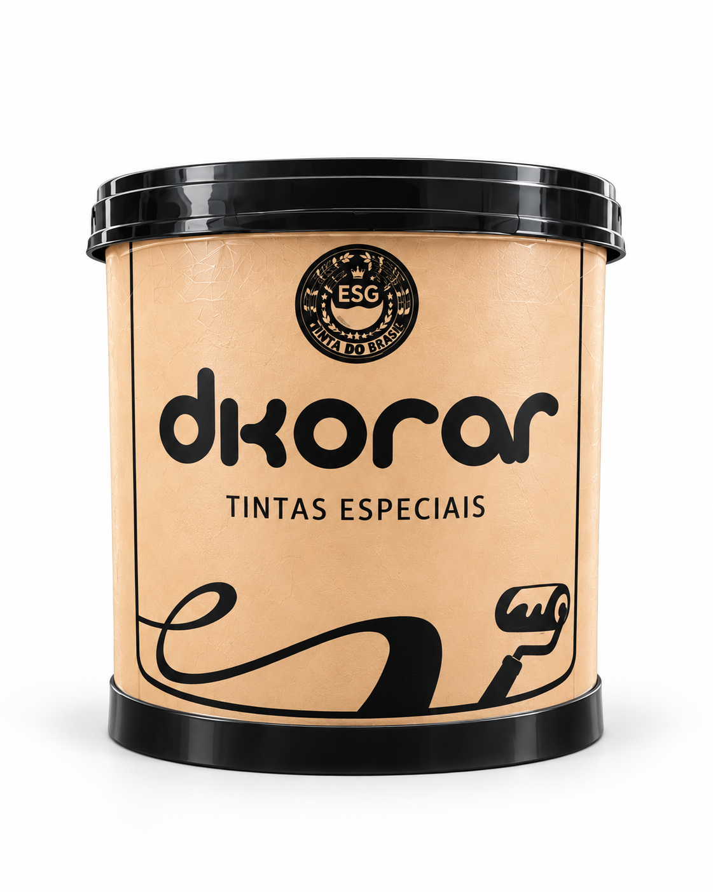
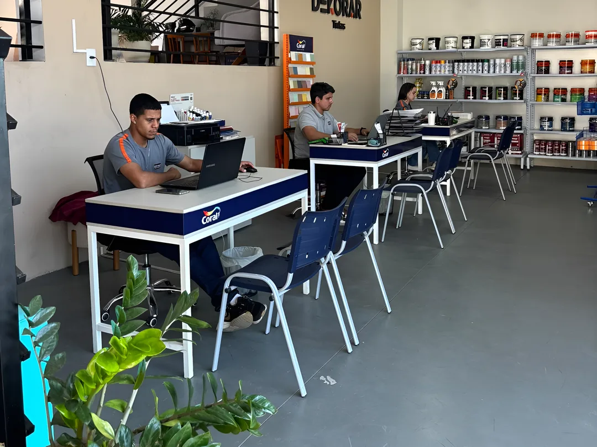
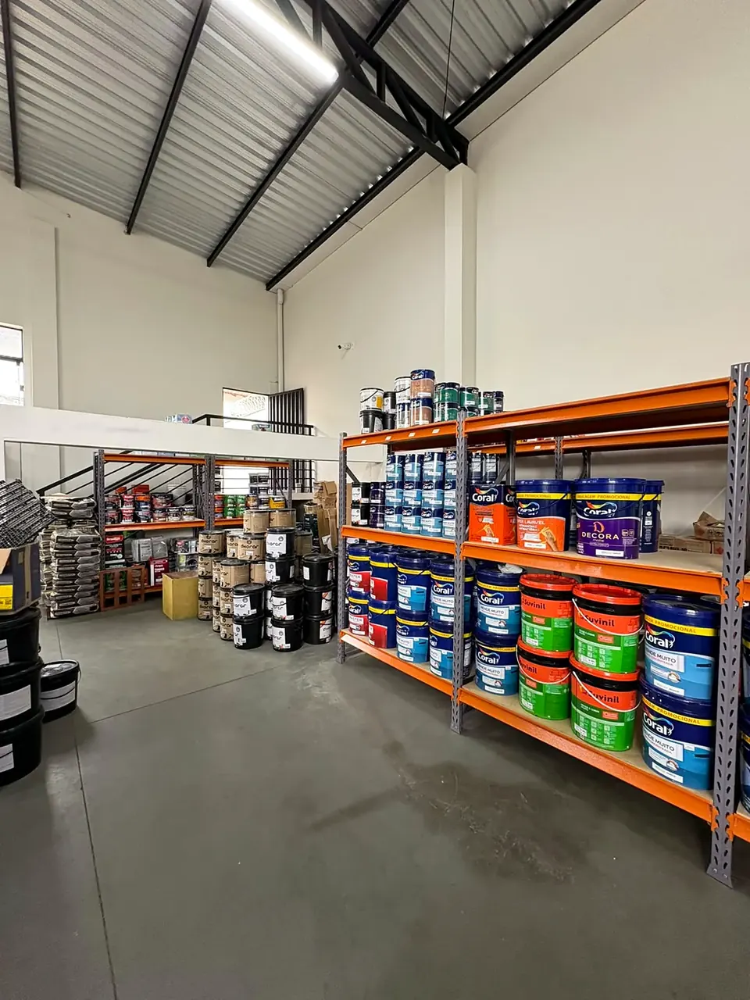
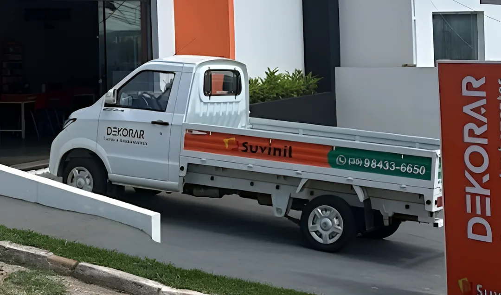
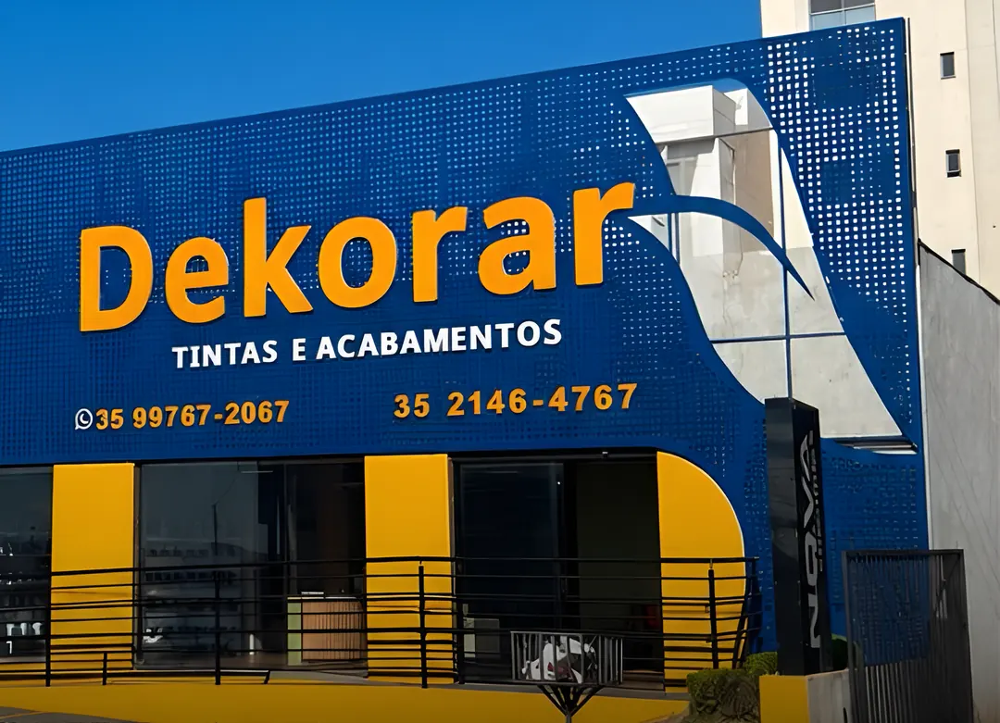

Lavras
Av. Dr. Francisco Martins de Andrade, 91Bairro Ouro Preto, Lavras (MG)
Tintas Coral, Suvinil, Anjo e a nossa linha própria Dkorar, com leitor de cor na loja e entrega com caminhonete própria em Lavras, Três Corações e região.

A Dkorar Tintas Especiais é a linha própria da Dekorar: tintas, texturas e complementos com qualidade e preço de fábrica. A linha completa está nas lojas de Lavras e Três Corações.
1.200 kg
de Massa Corrida Dkorar numa só entrega, para um empreendimento de alto padrão em Varginha (MG).
Inmetro
A massa corrida Dkorar tem laudo do Inmetro, para obras de pequeno, médio e grande porte.
Tintas, massas, texturas e impermeabilizantes com preço, descrição e filtros. Escolha retirar na loja ou receber com a caminhonete.
Preços demonstrativos. O valor final é confirmado pela equipe.
Na loja, a Dekorar usa um leitor que identifica a cor direto na parede e busca os tons mais próximos nas cartelas. Assim você acerta a cor sem precisar levar um pedaço de reboco.
Experimente uma versão simplificada aqui: passe o dedo ou o mouse sobre a foto, ou use uma foto sua. A leitura acontece no seu aparelho; nenhuma imagem é enviada.
Cor
#000000
RGB 0, 0, 0
Tons próximos neste exemplo
Tons de referência ilustrativos, não são códigos de fabricante. Na loja a leitura é feita com o aparelho e as cartelas reais.
Prateleiras organizadas por marca e linha, mesas para montar o orçamento com calma e um galpão para separar pedidos grandes.


A caminhonete da Dekorar sai das lojas de Lavras e Três Corações com tinta, massa e revestimento direto para a casa ou o canteiro de obra. Para pedidos grandes, a entrega vai mais longe: já levamos 1.200 kg de massa Dkorar até Varginha.
Posições aproximadas. Lojas em Lavras e Três Corações.

Duas lojas com estoque, atendimento e retirada. Horários: confirme pelo WhatsApp.


Conte o que a obra precisa, escolha a loja e mande pelo WhatsApp. Para comprar direto, use a loja online.